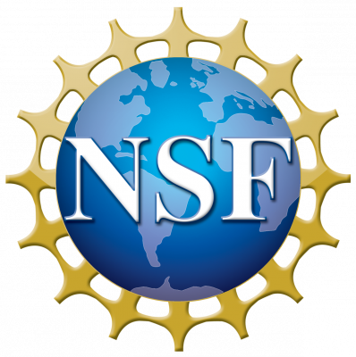
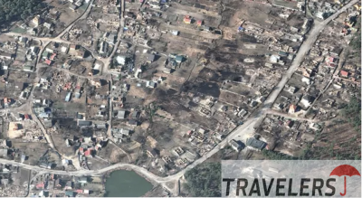

Projects - Under Construction….
0. Machine Learning for EDA
- LLM-aided Verilog Generation [DAC’24 WIP]
1. Efficient Machine Learning Systems, Natural Language Processing, Computing Vision
- Sparse Training – [ICCD’22]
- FPGA Acceleration and Architecture – [MICRO’17], [FPGA’18], [FPGA’19], [DAC’20], [DAC’22]
- GPU Acceleration – [SC’21]
- Efficient DNN Pruning – [EMNLP’20], [DAC’21], [IJCAI’21 a], [ACL’22]
- Efficient Training – [IJCAI’21]
- Run-time Reconfigurable Inference – [DAC’21], [DATE’22]
- Embedded/IoT System [DATE’22], [ICCAD’22 a], [ICCAD’22 b]
2. Privacy-Preserving Machine Learning 
- Gradient Attack – [EMNLP’21 a]
- Membership Inference Attack – [IJCAI’21 b]
- Secure Federated Learning – [EMNLP’21 b(Oral)]
3. Non-von Neuman computing & Emerging Tech.
- ReRAM Based ML – [ISCA’21], [ISLPED’19], [DATE’21 (best paper nomination)], [ISCAS’22]
- Quantum ML – [ICCAD’21 c], [MLSys’22].
4. Optigrid: Planning & Optimizing the Power Grid During the Low Carbon Transition in Connecticut (Sponsor: Eversource)

- Developing statistical and deep learning models to predict demand using historical weather, EV sales, and PV installations.
- Real-time techniques to process statistical and deep learning models.
5. Graph Processing & Graph Neural Network – [ICCD’22] (Sponsor: SRC)
- Exploring extreme sparsity for GNNs to achieve high energy efficiency in large core-count machines.
- Project description: our main objective is to pioneer next-generation many cores systems for the efficient execution of GNNs in the field. We will co-innovate on the algorithm and hardware to deliver strong performance scaling and energy improvements in futuristic large shared-memory multicores.
- Personnel: Caiwen Ding (PI), Omer Khan (Co-PI);
6. Change and Damage Detection from Aerial Images. (Sponsor: Travelers) 
- Project Description: This project will perform data preprocessing and data understanding of the satellite image from Travelers, and propose change detention via Siamese Networks on pre and post-event images. We will also develop unsupervised anomaly (change) detection on aerial images and Hail damage detection.
- Personnel: Jinbo Bi (PI), Caiwen Ding (Co-PI), Dongjin Song (Co-PI).
7. Evaluating the Impact of Preferential Trade Agreements on Agricultural and Food Trade: New Insights from Natural Language Processing and Machine Learning: This work is supported by the Agriculture and Food Research Initiative (Award Number 2022-67023-36399) from the National Institute of Food and Agriculture.
- Project Description: This project generates new knowledge regarding the formation of preferential trade agreements (PTAs), their impact on global trade, and the consequences for U.S. agricultural and food businesses and employment.
- Personnel: Caiwen Ding (Co-PI); Jeremy Jelliffe (Collaborator at ERS-USDA); Dongjin Song, (Co-PI); Sandro Steinbach, (PI)
8. Feasibility of Transformer-based Code Migration for HPC (Sponsor: DOE/LLNL)
- Investigating a set of large language models (LLM)-based code translation and generation techniques specially designed for meeting LLNL’s HPC application requirements.
- Personnel: Caiwen Ding (PI)
9. Incorporating Large Language Models (LLMs) into Transportation Safety Analytics and Equity, DOT/NEUTC
10. Expanding Capabilities of Artificial Intelligence (AI) Based Video Analytics for Intersection Safety and Operation for CTDOT, DOT/CCTRP
11. Automated Wrong Way Driving Detection Using Economical Sensor Technologies, DOT/CCTRP